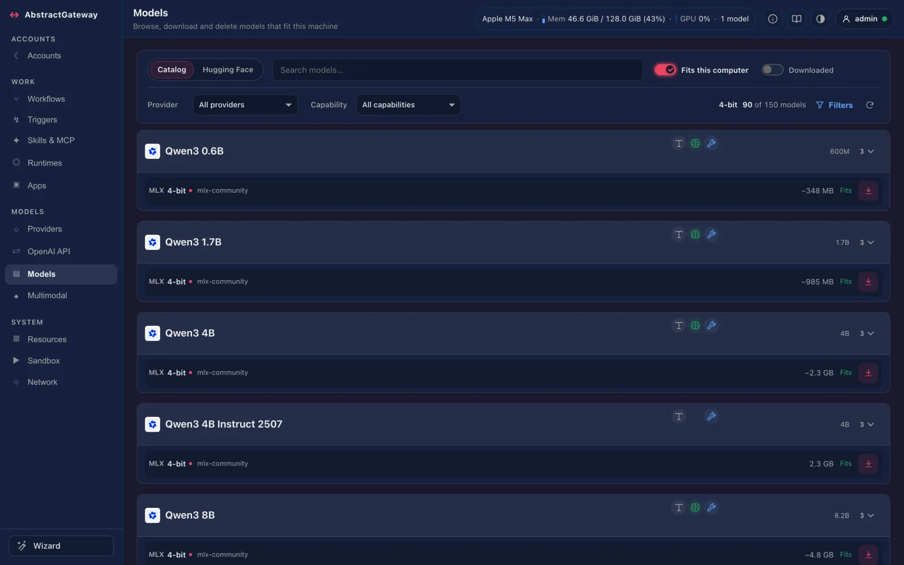

Build on AI capabilities.
Write once, run on any model.
AbstractCore is an abstraction layer over AI capabilities. Write your program once against what it needs: text, documents, images, audio and video in; text, speech, images, video and music out, through one llm.generate(...), with typed output, tools, sessions and embeddings. The same code runs on open and closed models, local or cloud. Providers and models change; your program talks to the capability. From Python, or through its OpenAI-compatible server from any language.
curl -LsSf https://raw.githubusercontent.com/lpalbou/AbstractCore/v2.35.0/scripts/install.sh | sh
No admin rights and no Python needed: it gets uv and Python 3.12, picks abstractcore, abstractcore[apple] or abstractcore[gpu] from the machine and installs it with its commands; running it again upgrades. All install options →
Write Against Capabilities, Not Providers
Your program asks for a capability. AbstractCore turns it into the right call for the model underneath, with explicit policies when a model lacks a modality, never a silent change. Voice, images, video, music and 3D are capability plugins that the light install already includes.
media=Text
A prompt, or a whole conversation (messages=).
Images
A vision model, or a vision model you configure once that describes the image for a text-only model.
Documents
PDFs, Office files, CSV and text, with optional visual-text compression for long ones.
Audio
Speech to text through AbstractVoice, or a model that hears audio natively.
Video
Native video where the model supports it, otherwise sampled frames.
llm.generate()
or, from any language,
POST /v1/...
one call, one policy for media,local and cloud models
output=Text and tool calls AbstractCore
Streamed or whole; the model’s tool calls come back in response.tool_calls.
Typed objects AbstractCore
A validated Pydantic object with response_model=.
Voice AbstractVoice
Text to speech, voice cloning and voice design, local or remote.
Images and video AbstractVision
Generate, edit and upscale images; text to video and image to video.
Music and sound AbstractMusic
Text to music, and sound effects with output="sound".
Decisions AbstractCore
Calibrated answers to typed questions about a text, with output="decision".
- Ollama
- LM Studio
- MLX
- HuggingFace
- vLLM
- OpenAI-compatible
- OpenAI
- Anthropic
- OpenRouter
- Portkey
- Textin & out
- Documentsin
- Imagesin & out
- Videoin & out
- Voicein & out
- Musicout
- 3Dout
- Camerain (capture)
- Decisionsout (from a text)
Music: generated through AbstractMusic; music understanding comes in through audio-capable models. 3D comes out through llm.scene3d (Abstract3D); a camera is captured through llm.camera (AbstractCamera, installed separately).
from abstractcore import create_llm
# Any provider: "ollama", "mlx", "lmstudio", "anthropic", ...
llm = create_llm("openai", model="gpt-4o")
# Read: an image and a document in, text out
answer = llm.generate("What's in this image and document?",
media=["photo.jpg", "report.pdf"])
# Hear: a recording in, its transcript out
heard = llm.generate(media={"type": "audio", "path": "meeting.wav"},
output="text")
# Speak and draw: the same call, another output
speech = llm.generate(text="Hello from AbstractCore.", output="voice")
image = llm.generate("A red ceramic mug on a white table.", output="image")What You Can Build On
Each capability is the same call on every model that can serve it. The plugins’ local engines come with abstractcore[apple] or abstractcore[gpu].
Generate and converse
Text generation, streamed or whole, sync or async. BasicSession keeps the conversation, saves and restores it, and compacts long histories; prompt_cache_key reuses a cached prefix on the backends that support it.
Read images and documents
Attach files with media=[...]: images, PDFs, Office files, CSV and text. A text-only model can still use an image through a vision model you configure once, and long documents can be rendered into images for a vision model (Glyph).
Hear and speak
Transcribe a recording, speak with a catalog voice or one you design from a description, clone a voice from a sample: output="voice" or llm.voice. The same speech capability on two providers:
Create images, video and 3D
Generate, edit and upscale images and turn text or an image into video with output="image" or "video"; turn text or an image into a 3D model with llm.scene3d.
Compose music and sound
Text to music and sound effects with output="music" or output="sound". A 15-second sample generated locally with AbstractMusic:
Typed output
Pass a Pydantic model as response_model= and get a validated object back, with provider-aware strategies and a retry budget. Over HTTP, response_format structured outputs are validated against your schema.
Call tools
Native and prompted tool calling across models. By default the calls come back in response.tool_calls and your code decides whether to run them. Built-in web tools (web_search, fetch_url, skim_url) and MCP tool servers.
Embed and search
EmbeddingManager turns text into vectors for semantic search and retrieval, with local or remote embedding models; the server exposes the same as /v1/embeddings.
Decide
Decision models take a text and return calibrated, typed answers to your questions (a choice, yes or no, a score) with output="decision"; the server answers the same on POST /v1/decisions.
A Few Lines Each
Every example uses the public API as documented for 2.35.0. Media outputs need the matching plugin backend configured once (abstractcore config or the console).
from abstractcore import create_llm
# An image in, text out
llm = create_llm("anthropic", model="claude-haiku-4-5")
resp = llm.generate("Describe the image.", media=["./image.png"])
print(resp.content)
# Images and documents in one call, on any provider
llm = create_llm("openai", model="gpt-4o")
resp = llm.generate("What's in this image and document?",
media=["photo.jpg", "report.pdf"])
# A text-only model can use images too: set a vision model once
# abstractcore --set-vision-provider lmstudio qwen/qwen3-vl-4bfrom abstractcore import create_llm
llm = create_llm("openai", model="gpt-4o-mini")
# Hear: a recording in, its transcript out
heard = llm.generate(media={"type": "audio", "path": "meeting.wav"},
output="text")
text = llm.audio.transcribe("speech.wav")
# Speak: text in, audio out
speech = llm.generate(text="Hello from AbstractCore.", output="voice")
wav_bytes = speech.outputs["voice"][0].data
# Voices by language, or design your own from a description
french = llm.voice.list_voices(language="fr")
mira = llm.voice.design_voice("A calm, warm female voice in her thirties.",
name="Mira")
wav = llm.voice.tts("Good morning.", voice=mira["voice_id"], one_shot=True)# Image generation via AbstractVision
image = llm.generate("A red ceramic mug on a white table.", output="image")
png_bytes = image.outputs["image"][0].data
# Image edit: a source image and an optional style reference
edited = llm.generate(
"Make the mug blue using the second image as a style reference.",
media=[
{"type": "image", "path": "mug.png", "role": "source"},
{"type": "image", "path": "style.png", "role": "style"},
],
output="image",
)
# Image to video: the image is the first frame
clip = llm.generate(
"Slow camera push-in.",
media={"type": "image", "path": "first-frame.png", "role": "source"},
output={"modality": "video", "task": "image_to_video"},
)# Music via AbstractMusic
music = llm.generate(
text="A short calm piano loop.",
output={"modality": "music", "provider": "acemusic",
"duration_s": 8, "format": "wav"},
)
music_wav = music.outputs["music"][0].data
# A sound effect: the sound output, with its length in seconds
resp = llm.generate(
text="laser gunshot",
output={"modality": "sound", "task": "text_to_audio",
"seconds": 3, "format": "wav"},
)
clip = resp.outputs["sound"][0]from pydantic import BaseModel
from abstractcore import create_llm
class Answer(BaseModel):
title: str
bullets: list[str]
llm = create_llm("openai", model="gpt-4o-mini")
answer = llm.generate("Summarize HTTP/3 in 3 bullets.", response_model=Answer)
print(answer.bullets)from abstractcore import create_llm, tool
@tool
def get_weather(city: str) -> str:
"""Current weather for a city.
Args:
city: The city name, for example "Paris".
"""
return f"{city}: 22°C and sunny"
llm = create_llm("openai", model="gpt-4o-mini")
resp = llm.generate("What's the weather in Paris? Use the tool.",
tools=[get_weather])
print(resp.content)
print(resp.tool_calls) # your code decides whether to run themfrom abstractcore import create_llm, BasicSession
session = BasicSession(create_llm("anthropic", model="claude-haiku-4-5"))
print(session.generate("Give me 3 bakery name ideas.").content)
print(session.generate("Pick the best one and explain why.").content)
llm = create_llm("ollama", model="qwen3:4b")
for chunk in llm.generate("Write a short poem about distributed systems.",
stream=True):
print(chunk.content or "", end="", flush=True)# One server for every application, in any language
abstractcore serve # 127.0.0.1:8000; prints a one-time console link
export ABSTRACTCORE_AUTH_TOKEN="$(abstractcore serve --print-token)"
curl -X POST http://localhost:8000/v1/chat/completions \
-H "Content-Type: application/json" \
-H "Authorization: Bearer $ABSTRACTCORE_AUTH_TOKEN" \
-d '{"model": "openai/gpt-4o-mini",
"messages": [{"role": "user", "content": "Hello!"}]}'
# Same server: /v1/responses, /v1/embeddings, /v1/images/generations,
# /v1/audio/speech, /v1/audio/transcriptions, /v1/decisionsabstractcore host profile # accelerator, memory ceiling, free disk
abstractcore models catalog --fits # downloadable models that fit
abstractcore models download ollama qwen3:8b
abstractcore models list # installed models per engine
abstractcore models verify qwen3:8b --provider ollama
abstractcore engines install ollama --dry-run # the exact install commandSee It in the Console
abstractcore serve also serves a web console: what this machine can run, the model catalog with fit badges, downloads in a click, engine installs with one confirmation, and the CLI command behind every action. abstractcore-console brings the same screens to a terminal.

Any application, any language
The OpenAI-compatible server puts every capability behind /v1: any OpenAI SDK picks the model with model="provider/model".
import os
from openai import OpenAI
client = OpenAI(base_url="http://localhost:8000/v1",
api_key=os.environ["ABSTRACTCORE_AUTH_TOKEN"])
resp = client.chat.completions.create(
model="ollama/qwen3:4b",
messages=[{"role": "user", "content": "Hello from the gateway!"}],
)
print(resp.choices[0].message.content)Same code, another model
The capability stays; the model underneath is one argument. Local runtimes, self-hosted servers and cloud APIs answer the same call.
from abstractcore import create_llm
llm = create_llm("ollama", model="qwen3:4b")
llm = create_llm("mlx", model="mlx-community/Qwen3-4B-4bit")
llm = create_llm("anthropic", model="claude-haiku-4-5")
response = llm.generate("Draft a privacy-preserving onboarding checklist.")
print(response.content)Images for text-only models
Configure a vision model once; a text-only model then gets short visual observations of each image injected into its request.
abstractcore --set-vision-provider lmstudio qwen/qwen3-vl-4b
abstractcore --set-video-strategy auto
abstractcore --statusSemantic search
Vectors for retrieval with a local or remote embedding model, the same way.
from abstractcore.embeddings import EmbeddingManager
embedder = EmbeddingManager(provider="ollama",
model="granite-embedding:278m")
vector = embedder.embed("Machine learning transforms how we process information")
score = embedder.compute_similarity("cat", "kitten")Decisions from a text
Typed, calibrated answers about a text from a decision model (hosted Jev, or local Kev, Lev and Laya): a choice, a yes-or-no probability, a score.
decided = llm.generate(
"Shoes arrived two weeks late and in the wrong size.",
output="decision",
questions={
"department": {"type": "choice",
"instructions": "Which team should handle this?",
"criteria": {"returns": None, "shipping": None,
"billing": None}},
"escalate": "Does this need urgent human attention?",
},
)
decided.decisions["department"].choiceInstall in one line
No admin rights and no Python needed, on macOS, Linux and Windows (the command above). The installer picks abstractcore, abstractcore[apple] or abstractcore[gpu] from the machine, uses prebuilt packages only (it never starts a compiler), prints every step and upgrades in place when you run it again.
An unreachable endpoint says so
When the provider’s machine is off or asleep, refuses the connection or its name does not resolve, you get EndpointUnreachableError with the address, the cause and the time spent, instead of a misleading “timed out”. These failures no longer trip the circuit breaker, and a connection attempt that itself timed out is not retried.
MCP servers that check the handshake
The MCP client’s handshake now follows the specification, so strict servers such as Context7 accept it and their tools reach the model. When a server restarts mid-session, the client opens a new session and replays the request once.
Tool parameters carry their meaning
A tool’s parameters take their descriptions from its docstring (Args: or :param name:), so the model sees what each argument is for instead of bare names. Every built-in tool parameter is described.
Your settings file is never replaced
A settings file that cannot be parsed now stops the program with its path and the parse error (ConfigParseError). It is never renamed, shadowed by defaults or overwritten later; abstractcore config exits with status 1 and the server refuses to start.
Up-to-date docs for coding agents
The user documentation is re-indexed on Context7 after each release, so coding agents that read AbstractCore through the Context7 MCP server see the published version.
Also: the capability registry knows the current vendor lineups (GPT-6 and GPT-6.1, Claude 5.5 and Fable 5.1, Grok 4.3 to 4.7, Qwen 3.8, DeepSeek V4.1 Flash, GLM 5.3, Kimi K3, Nemotron 3.5 and more), a GGUF or MLX re-packaging of a registered model resolves to that model’s entry, and transcriptions report language and detected_language.
Runs on These Today
The providers behind the capabilities in 2.35.0. Changing one is one argument, not a rewrite. The light install (pip install abstractcore) runs every remote provider; abstractcore[apple] and abstractcore[gpu] add the local engines.
- InstallationOne-line install and the three settings
- Getting startedFirst call, sessions, tools and media
- Documentation indexRecommended reading paths
- PrerequisitesProvider keys, base URLs, hardware
- FAQConcepts and supported limits
- TroubleshootingInstall, auth, generation, model loads
- CapabilitiesVoice, vision, music, 3D and camera plugins
- Request and outputMultimodal input and the output= kinds
- Media inputImages, documents, audio and video
- Tool callingNative and prompted tools
- Structured outputresponse_model and retries
- API overviewThe public Python API
- API referenceComplete API documentation
- HTTP serverThe OpenAI-compatible /v1 API
- Web consoleModels and engines in the browser
- Terminal consoleThe same screens in a terminal
- Local modelsCatalog, fit, download, verify
- Local enginesDetect and install engines
- ConfigurationKeys and capability routes
- ChangelogRelease notes
- llms.txtThe concise index for assistants
- llms-full.txtThe user docs in one file
- Agent skillKeep its references folder
- Integration and operationsBounded recipes for agents
- Context7Query the docs over MCP
Part of AbstractFramework
AbstractCore is the capability layer of AbstractFramework. Use it on its own when you want capabilities close to your code; use the framework when you also need durable runtime execution, agents, flows, a gateway with its consoles, memory or assistant apps, all built on AbstractCore. The framework’s installer already includes AbstractCore and its commands.